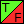

config/gameplay.json
Defines behavior of various game elements.
 The root entry.
The root entry.- shooter: Defines the shooter behavior and appearance.
 speedShotBeamRenderingType: Defines how the speed shot beam is rendered. Available values are:
speedShotBeamRenderingType: Defines how the speed shot beam is rendered. Available values are:- full - The full beam is always visible.
- cut - The beam is cut where it intersects a sphere train.
- scale - The beam is shrunk so its top is touching a sphere train.
- speedShotBeamColored: Whether the beam should be colored with the current sphere color.
 speedShotBeamFadeTime: How long the speed shot beam should fade in or out, in seconds.
speedShotBeamFadeTime: How long the speed shot beam should fade in or out, in seconds. speedShotParticle: Persistent particle packet. If defined, it will spawn when a speed shot powerup is obtained, and despawn when the speed shot beam diminishes.
speedShotParticle: Persistent particle packet. If defined, it will spawn when a speed shot powerup is obtained, and despawn when the speed shot beam diminishes.- shotSpeed: The default speed of how fast the shot spheres will be, in pixels per second.
- level: Defines some key level times.
- controlDelay: Time between launching the first spheres in a level and the shooter activation in seconds.
- finishDelay: Time between considering the level complete (win condition met and empty board) and releasing the first bonus scarab.
- bonusDelay: Time between each consecutive bonus scarab launch in multi-path levels in seconds.
- wonDelay: Time between the last bonus scarab destruction and considering the level fully won.
- sphereBehaviour: Defines behavior of the spheres.
- acceleration: The default acceleration rate of spheres being pushed.
- foulAcceleration: The acceleration rate of spheres used only when the player fails to complete a level.
- attractionAcceleration: The acceleration rate of spheres magnetizing to each other.
- decceleration: The default decceleration rate of spheres.
- attractionSpeedBase: Maximum attraction speed of groups of like color being attracted together. This and attractionSpeedMult form a final value together using this expression: attractionSpeedBase + max(1, chain) * attractionSpeedMult.
- attractionSpeedMult: The second value used in the formula. Look above for description.
- knockbackSpeedBase: Speed induced when a group of spheres crashes into another sphere group behind it. This and knockbackSpeedMult form a final value together using this expression: knockbackSpeedBase + max(1, chain) * knockbackSpeedMult.
- knockbackSpeedMult: The second value used in the formula. Look above for description.
- foulSpeed: Maximum speed of spheres when the player fails to complete a level.
- overspeedCheck: If true, spheres will never move faster than the maximum speed defined at a given point of the path.
- invincible_scarabs: If true, scarabs cannot be crushed by spheres behind them. Instead, they are pushed.
- collectibleBehaviour: Defines how Collectibles behave.
 speed: A starting speed of the Collectibles.
speed: A starting speed of the Collectibles.- acceleration: An acceleration rate of the Collectibles.
- bonusScarab: Defines the Bonus Scarab.
 sprite: The sprite to be used by the Bonus Scarab.
sprite: The sprite to be used by the Bonus Scarab.- stepLength: The length of a single segment, which gives points. The formula defining how many points are given is as follows: max(floor(distance / stepLength), 1) * pointsPerStep.
- pointsPerStep: How many points are given for each step. The bonus score will be always a multiple of this value.
- coinDistance: The delay between generating collectibles. If omitted, the Bonus Scarab will not spawn any collectibles.
 coinGenerator: A collectible generator used periodically.
coinGenerator: A collectible generator used periodically.- speed: How fast does the Bonus Scarab move, in pixels per second.
- trailParticle: A one-time particle packet which the Bonus Scarab would emit. May be omitted if no particles are supposed to be generated.
- trailParticleDistance: Every how many pixels a specified particle will spawn. May not exist if trailParticle is not specified.
- destroyParticle: A one-time particle packet which the Bonus Scarab will launch upon destruction.
- destroyGenerator: A collectible generator used when the Bonus Scarab is destroyed.
 scoreFont: A font to be used to display the bonus value on the screen.
scoreFont: A font to be used to display the bonus value on the screen.- scorpion: Defines the Scorpion.
- sprite: The sprite to be used by the Scorpion.
- maxSpheres: The maximum amount of spheres the Scorpion can destroy. When exceeded, the Scorpion is destroyed. May not exist when no such limit is expected.
- maxChains: The maximum amount of chains the Scorpion can destroy. When exceeded, the Scorpion is destroyed. May not exist when no such limit is expected.
- speed: How fast does the Scorpion move, in pixels per second.
- trailParticle: A one-time particle packet which the Scorpion would emit. May be omitted if no particles are supposed to be generated.
- trailParticleDistance: Every how many pixels a specified particle will spawn. May not exist if trailParticle is not specified.
- destroyParticle: A one-time particle packet which the Scorpion will launch upon destruction.
- scoreFont: A font to be used to display the score value on the screen.